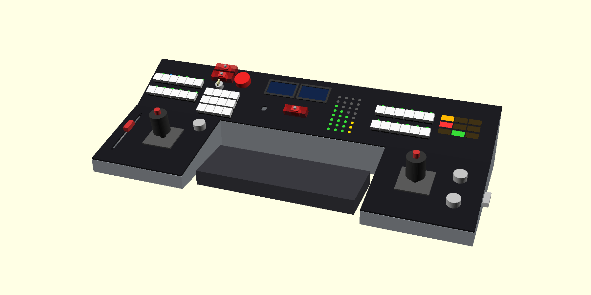
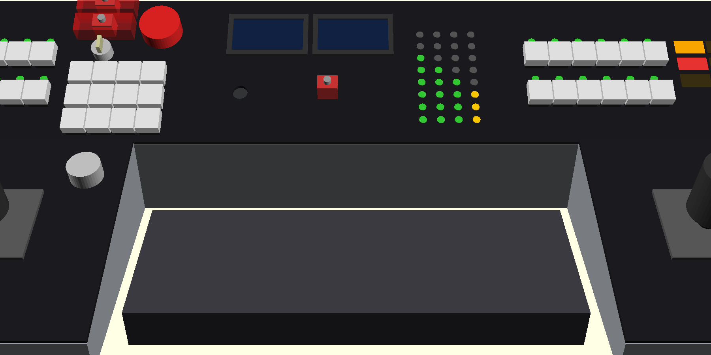

kerbal-controller
A hand-built, 3D printed control panel for Kerbal Space Program: two joysticks, a motorised throttle, keys that light up with the game's state, two screens and a row of guarded switches. This site and repo document the whole thing, end to end, for someone who knows none of it, including the mistakes. I am learning as I build, so I wrote it down.

| Stage | State | What exists |
|---|---|---|
| 1. Idea and requirements | Done | Goals, limits and the control map |
| 2. Choosing parts | In progress | Every part picked and priced. Nothing ordered yet |
| 3. Shape and layout (CAD) | In progress | A five-piece 3D model and renders. Nothing printed yet |
| 4. Wiring design | In progress | Colour-coded diagrams generated from one pin file |
| 5. Firmware | Not started | A design outline |
| 6. Printing | Not started | |
| 7. Build and bring-up | Not started | The first power-up procedure is written |
